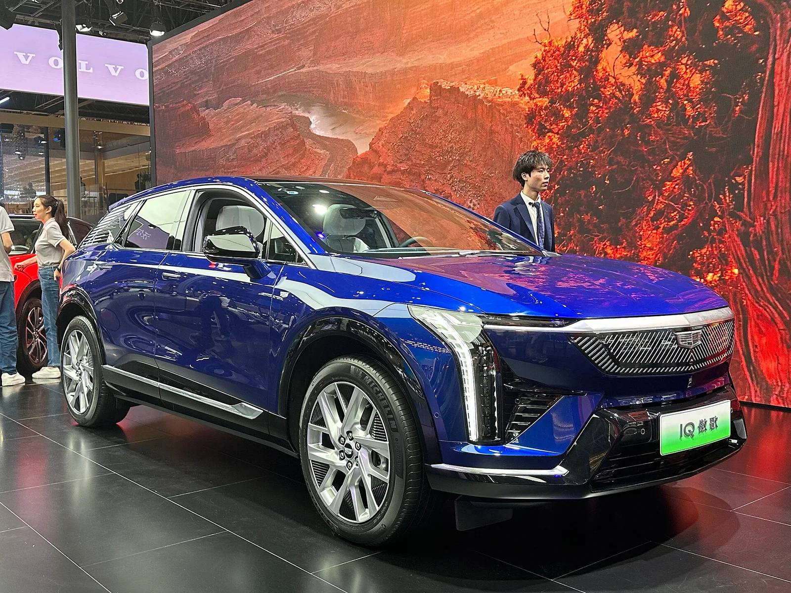
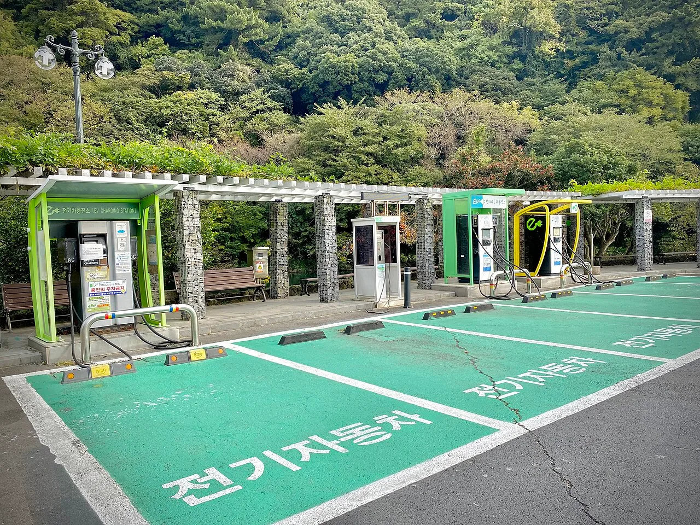

▲ 캐딜락 옵틱. 2026년형은 V-시리즈를 뺀 전 트림 값이 내려갔다
지금 미국에서 신차 값은 오르고 있습니다.
관세가 얹히면서 평균 거래가가 계속 밀려 올라가는 중입니다.
그런데 캐딜락 옵틱은 값을 내렸습니다. V-시리즈를 뺀 전 트림에서 1,995달러입니다.
1. 값을 내렸다
2026년형 옵틱의 시작가는 5만990달러입니다. 2025년형이 5만2,895달러였으니 1,995달러, 비율로는 3.8%가 내려갔습니다.
| 연식 | 시작가 | 변화 |
|---|---|---|
| 2025년형 | 5만2,895달러 | — |
| 2026년형 | 5만990달러 | -1,995달러 (-3.8%) |
인하는 고성능 V-시리즈를 제외한 전 트림에 적용됩니다. 최상위만 값을 지키고, 실제로 많이 팔리는 구간을 내린 구조입니다.
2. 값이 오르는 시장에서
이 결정이 눈에 띄는 이유는 방향이 반대이기 때문입니다.
미국 신차 시장은 관세 영향으로 값이 오르는 국면입니다. 미국에서 조립한 차량조차 전년 대비 1,600~2,000달러 오른 것으로 집계되고, 캐나다·멕시코·중국에서 만든 차는 세그먼트에 따라 2,000~6,000달러까지 밀려 올라갔습니다.
📍 값을 내릴 수 있는 이유
전기차는 배터리가 원가의 큰 부분을 차지합니다. 그래서 셀 단가가 내려가면 완성차 값에 반영할 여지가 생깁니다. 여기에 경쟁 심화가 겹칩니다. 프리미엄 전기 SUV 구간은 선택지가 계속 늘고 있어, 시작가가 곧 노출 순위를 좌우합니다.
3. 파워트레인 세 가지
2026년형의 또 다른 변화는 후륜구동 단일모터가 추가됐다는 점입니다.
| 구성 | 출력 | 토크 | 주행거리 |
|---|---|---|---|
| 단일모터 후륜 | 315마력 | 332lb-ft | 300마일 |
| 듀얼모터 사륜 | 440마력 | 498lb-ft | 280마일 |
| V-시리즈 듀얼모터 | 519마력 | 650lb-ft | 275마일 |
표를 세로로 읽으면 관계가 보입니다. 출력이 올라갈수록 주행거리는 내려갑니다. 가장 싸고 가장 약한 트림이 가장 멀리 갑니다.

▲ 모터를 하나 더 달면 출력은 오르지만 무게와 소비 전력도 함께 오른다 ⓒ Wikimedia Commons
이유는 단순합니다. 모터를 하나 더 달면 무게가 늘고, 상시 사륜 구성은 구름 저항과 소비 전력이 커집니다. 같은 배터리를 쓴다면 결과는 주행거리로 나타납니다.

▲ 캐딜락은 전기 SUV 라인업을 아래위로 넓히고 있다 ⓒ Wikimedia Commons
4. 어느 쪽을 고를 것인가
| 이런 조건이면 | 선택 |
|---|---|
| 눈·비가 잦은 지역, 견인이나 험로 | 듀얼모터 사륜 |
| 장거리 비중이 높다 | 단일모터 후륜 — 300마일 |
| 가속 성능이 우선 | V-시리즈 |
| 도심 위주, 예산 중시 | 단일모터 후륜 |
전기차에서 '기본형이 가장 멀리 간다'는 구도는 흔합니다. 그래서 상위 트림을 고를 때는 늘어난 출력을 실제로 쓸 조건인지부터 따져보는 편이 합리적입니다.

▲ 사륜을 고르면 주행거리가 줄어드는 구조는 국내 전기차도 같다 ⓒ Wikimedia Commons
5. 국내와의 관계
옵틱은 국내에 출시되지 않았습니다. 캐딜락코리아 라인업에는 들어와 있지 않습니다.
다만 참고할 지점은 있습니다. 국내 전기차 시장에서도 같은 구조가 반복되기 때문입니다. 듀얼모터 사륜 사양은 대체로 주행거리가 짧고, 보조금 산정에서도 불리하게 작용할 수 있습니다.
✅ 전기차 트림을 고를 때
· 사륜 사양의 주행거리 감소폭을 카탈로그에서 직접 확인
· 보조금 산정 기준에 걸리는지 — 전비가 기준을 밑돌면 감액될 수 있습니다
· 사륜이 실제로 필요한 주행 환경인지
· 겨울철에는 표시 주행거리에서 더 줄어든다는 점을 감안
6. 정리
2026년형 캐딜락 옵틱이 V-시리즈를 제외한 전 트림에서 1,995달러 내려 5만990달러부터 시작합니다. 관세로 신차 값이 오르는 시장에서 방향이 반대인 결정입니다.
파워트레인은 후륜 315마력, 사륜 440마력, V-시리즈 519마력 세 가지입니다. 그리고 주행거리는 가장 약한 후륜이 300마일로 가장 깁니다.
국내에는 출시되지 않았지만, 사륜을 고르면 주행거리가 줄어드는 구조는 국내 전기차에서도 똑같이 적용됩니다.